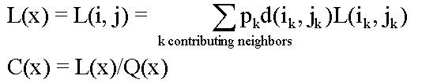
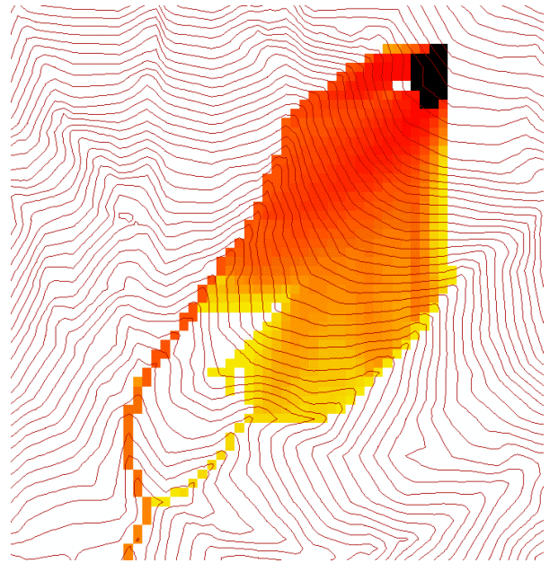

D-Infinity Concentration Limited Acccumulation
(c) 2010 by David G. Tarboton
This function applies to the situation where an
unlimited supply of a substance is loaded into flow at a concentration or
solubility threshold Csol over a region indicated by an indicator grid (dg).
It a grid of the concentration of a substance at each location in the domain,
where the supply of substance from a supply area is loaded into the flow
at a concentration or solubility threshold. The flow is first calculated
as a D-infinity weighted contributing area of an input Effective Runoff
Weight Grid (notionally excess precipitation). The concentation of substance
over the supply area (indicator grid) is at the concentration threshold.
As the substance moves downslope with the D-infinity flow field, it is
subject to first order decay in moving from cell to cell as well as dilution
due to changes in flow. The decay multiplier grid gives the fractional
(first order) reduction in quantity in moving from grid cell x
to the next downslope cell. If the outlets shapefile is used, the tool
only evaluates the part of the domain that contributes flow to the locations
given by the shapefile. This is useful for a tracking a contaminant or
compound from an area with unlimited supply of that compound that is
loaded into a flow at a concentration or solubility threshold over a zone
and flow from the zone may be subject to decay or attenuation.
The indicator grid (dg) is used to delineate
the area of the substance supply using the (0, 1) indicator function i(x).
A[] denotes the weighted accumulation operator evaluated using
the D-Infinity Contributing Area function. The Effective Runoff Weight
Grid gives the supply to the flow (e.g. the excess rainfall if this is
overland flow) denoted as w(x). The specific discharge is then
given by:
Q(x)=A[w(x)].
This weighted accumulation Q(x) is output
as the Overland Flow Specific Discharge Grid. Over the substance supply area
concentration is at the threshold (the threshold is a saturation or solubility
limit). If i(x) = 1, then
C(x) = Csol, and L(x) = Csol Q(x),
where L(x) denotes the load being carried
by the flow. At remaining locations, the load is determined by load accumulation
and the concentration by dilution:

Here d(x) = d(i, j) is a decay multiplier
giving the fractional (first order) reduction in mass in moving from grid
cell x to the next downslope cell. If travel (or residence) times
t(x) associated with flow between cells are available d(x)
may be evaluated as exp(-k t(x)) where k is a first order
decay parameter. The Concentration grid output is C(x). If the
outlets shapefile is used, the tool only evaluates the part of the domain
that contributes flow to the locations given by the shapefile.

Useful for a tracking a contaminant released or
partitioned to flow at a fixed threshold concentration.
Parameters
- Number of Processes
Integer
- The number of stripes that the domain will be divided into and the
number of MPI parallel processes that will be spawned to evaluate each
of the stripes.
- D-Infinity Flow Direction Grid
Raster Grid
- A grid giving flow direction by the D-infinity method. Flow direction
is measured in radians, counter clockwise from east. This grid can be
created by the function "D-Infinity Flow Directions".
- Disturbance Indicator Grid
Raster Grid (optional)
- A grid that indicates the source zone of the area of substance
supply and must be 1 inside the zone and 0 or "no data" over
the rest of the domain.
- Decay Multiplier Grid
Raster Grid
- A grid giving the factor by which flow leaving each grid cell is
multiplied before accumulation on downslope grid cells. This may be
used to simulate the movement of an attenuating or decaying substance.
If travel (or residence) times t(x) associated with flow between
cells are available d(x) may be evaluated as exp(-k t(x))
where k is a first order decay parameter.
- Effective Runoff Weight Grid
Raster Grid
- A grid giving the input quantity (notionally effective runoff or
excess precipitation) to be used in the D-infinity weighted contributing
area evaluation of Overland Flow Specific Discharge.
- Outlets Shapefile
Point Shapefile (optional)
- This optional input is a point shapefile defining outlets of interest.
If this file is used, the tool will only evaluate the area upslope of
these outlets.
- Concentration Threshold
Double
- The concentration or solubility threshold. Over the substance supply
area, concentration is at this threshold. Default 1.0.
- Check for edge contamination
Boolean
- This option determines whether the tool should check for edge
contamination. Edge contamination is defined as the possibility that
a value may be underestimated due to grid cells outside of the domain
not being considered when determining contributing area. Default
True.
Outputs
- Concentration Grid
Raster Grid
- A grid giving the resulting concentration of the compound of interest
in the flow.